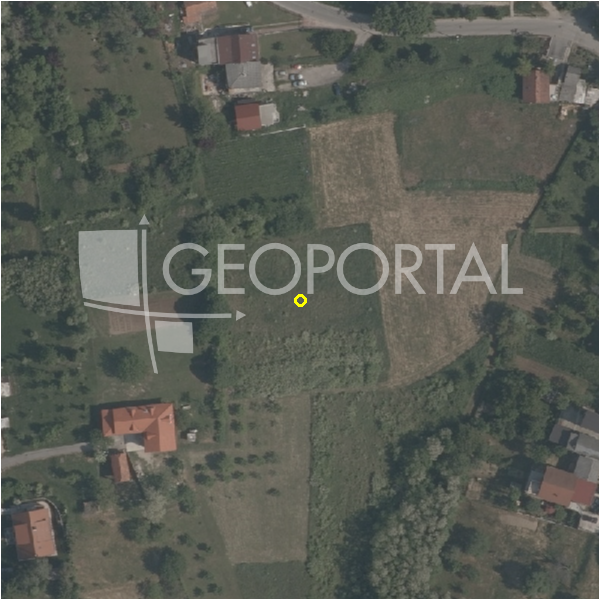

#8839 · Zagreb; Bizek - građevinsko zemljište 4897 m2
Bizek, Podsused - Vrapče, Grad Zagreb · zemljiste · njuskalo · status active · oglas ↗
Ocjena
- Score
- 12 rule 12 · LLM – · 13.09.2026.
- RLV
- -394.000 € (-80 €/m²) · ratio -1,15
- Ukupna investicija
- 3,49 M€
- GBP
- 1.470 m²
- Feedback
- –
- CRM
- –
Oglas
- Cijena
- 342.790 € (70 €/m²)
- Površina
- 4.897 m²
- Prodavatelj
- agencija · RE/MAX Centar nekretnina
- Prvi put
- 11.09.2026. · zadnje 11.09.2026. · 2 d na tržištu
Povijest cijene
| Datum | Cijena |
|---|---|
| 11.09.2026. | 342.790 € |
Flagovi
zona_provjeriti zona iz geokodiranja — provjeriti (−5)zone_uncertainty zona nije pregledana (reviewed: false) (−5)
parcelacija fazni projekt / parcelacija
djelomicno_gradivo djelomicno_gradivo
llm_pending LLM ekstrakcija/ocjena nedostupna
Komponente score-a
| rlv | {'gbp': 1470.27528, 'kis': 0.6, 'nkp': 1205.6257295999999, 'noi': None, 'rlv': -393536.43844528694, 'ratio': -1.148039436521739, 'value': None, 'phases': 2, 'profile': 'zagreb_visestambeno', 'gdv_neto': 3279301.984512, 'cost_soft': 218335.87908, 'gdv_bruto': 4099127.4806399997, 'kis_known': False, 'total_inv': 3485486.95708, 'cost_build': 2425954.2120000003, 'cost_other': 477839.466, 'cost_sales': 122973.82441919998, 'demolition': False, 'gbp_source': 'kis', 'rlv_per_m2': -80.36276055652174, 'parcel_area': 4897.0, 'parcelation': True, 'roi_on_cost': -0.09443696133149679, 'profit_at_ask': -329158.7969872004, 'cost_demolition': 0.0, 'total_inv_phase': 1924422.1785400002, 'parcel_area_effective': 2450.4588000000003, 'sale_price_per_m2_nkp': 3400.0} |
| hard | [] |
| info | ['parcelacija', 'djelomicno_gradivo', 'llm_pending'] |
| rubric | {'permits': {'max': 5.0, 'detail': {'permit': 'none'}, 'points': 0.0}, 'location': {'max': 15.0, 'detail': {'source': 'benchmark:seed:Podsused - Vrapče', 'sale_price_per_m2_nkp': 3400.0}, 'points': 0.0}, 'physical': {'max': 4.0, 'detail': {'slope_pct': 20.5, 'slope_points': 0.9}, 'points': 0.9}, 'liquidity': {'max': 3.0, 'detail': {'n_cuts': 0, 'points_cut': 0.0, 'points_days': 0.016666666666666666, 'seller_type': 'agencija', 'points_fresh': 0.5, 'price_cut_pct': None, 'days_on_market': 2, 'points_private': 0}, 'points': 0.52}, 'rlv_ratio': {'max': 25.0, 'detail': {'rlv': -393536, 'ratio': -1.148, 'asking_price': 342790.0}, 'points': 0.0}, 'ticket_fit': {'max': 10.0, 'detail': {'asking_price': 342790.0}, 'points': 8.43}, 'zone_quality': {'max': 8.0, 'detail': {'source': 'gis', 'zone_class': 'ostalo', 'gp_uredjeni': True}, 'points': 2.0}, 'profit_potential': {'max': 20.0, 'detail': {'roi_on_cost': -0.094, 'profit_at_ask': -329159}, 'points': 0.0}, 'price_vs_benchmark': {'max': 10.0, 'detail': {'source': 'auto:Podsused - Vrapče', 'deviation': 0.437, 'ask_eur_m2': 70, 'benchmark_eur_m2': 124.27}, 'points': 10.0}} |
| weights | {'llm': 0.4, 'rule': 0.6, 'model': 0.0} |
| penalties | {'zona_provjeriti': 5, 'zone_uncertainty': 5} |
| raw_score | 21,9 |
| rlv_notes | ['parcelacija: > 3000 m² → fazni projekt, −10 % površine, +5 % soft', 'gradivo 56 % čestice (2450 m²) — ostatak izvan gradive zone', 'fazni projekt: 2 faze; investicija prve faze 1,924,422 €'] |
| flag_notes | {'phases': 2, 'max_gbp': 1470, 'total_inv': 3485487, 'zone_code': 'Z', 'zone_note': 'provjeriti (geokodirano, zona = dominantna u 150 m)', 'urban_rule': '3.1', 'zone_class': 'ostalo', 'zone_source': 'gis', 'zone_reviewed': False, 'gis_unconfirmed': 'izvan_gp', 'total_inv_phase': 1924422} |
| caps_applied | [] |
GIS
- Čestica
- –
- Zona
- Z (ostalo) · NIJE pregledana · provjeriti (geokodirano, zona = dominantna u 150 m)
- Urbano pravilo (GUP 4a)
- 3.1
- kig / kis / katnost
- – / – / –
- GP / UPU
- uredjeni · UPU –
- Pristup / nagib
- unknown · 20,5 % (max 31,0 %)
- More
- –
- Zaštite
- Natura ne · zaštićeno ne · kulturno dobro ne
- Zgrade na čestici
- 4 %
- Match
- –
Karta
Ortofoto (DOF)

RLV kalkulacija — pretpostavke
| gbp | {'value': 1470.27528, 'source': 'kis'} |
| kis | {'value': 0.6, 'source': 'default_profila'} |
| soft_pct | {'value': 0.09, 'source': 'profil+parcelacija'} |
| nkp_ratio | {'value': 0.82, 'source': 'profil'} |
| cost_other | {'value': 477839.466, 'source': 'profil: doprinosi+uređenje po m² GBP, financiranje+rezerva % gradnje'} |
| zone_share | {'value': 0.556, 'source': 'gis'} |
| parcel_area | {'value': 4897.0, 'source': 'oglas'} |
| asking_price | {'value': 342790.0, 'source': 'oglas'} |
| margin_on_cost | {'value': 0.15, 'source': 'profil'} |
| build_cost_per_m2_gbp | {'value': 1650.0, 'source': 'profil'} |
| sale_price_per_m2_nkp | {'value': 3400.0, 'source': 'benchmark:seed:Podsused - Vrapče'} |
| transfer_tax_and_acquisition | {'value': 0.06, 'source': 'profil'} |
Ekstrakcija iz oglasa
| zone_claim | S |
| parcel_count | 3 |
Opis oglasa
Remax Centar nekretnina iz svoje ponude izdvaja građevinsko zemljište na Bizeku veličine 4897 m2 koje obuhvaća tri katastarske čestice. Na zemljištu se nalazi građevina koju je moguće adaptirati ili srušiti u svrhu oslobađanja prostora za izgradnju novog objekta. Mogućnost ulaza na teren sa dvije strane. Infrastruktura na terenu. Zemljište je u zoni pretežno stambene namjene. Privlačna lokacija u rubnim dijelovima grada Zagreba, sa otvorenim panoramskim pogledom. Teren je okružen šumom i zelenilom. Teren se nalazi u blizini svih bitnih sadržaja škola, vrtić, trgovina, dobra prometna povezanost. ID KOD AGENCIJE: 300431033-135 Nikolina Pavković Prodajni predstavnik Mob: +385 91 641 7008 Tel: +385 1 670 1704 Fax: +385 1 670 1711 Licenca: 21/2021 E-mail: n.pavkovic@remax-centar.hr remax-centarnekretnina.com